0223 · Aplicaciones ofimáticas · Tema 3 · Repaso
Práctica guiada de GIMP — El cartel del concierto
Qué se evalúa · RA y criterios
Resultado de aprendizaje
RA5. Manipula imágenes digitales analizando las posibilidades de distintos programas y aplicando técnicas de captura y edición básicas.
Criterios de evaluación que repasa esta práctica:
- c) Se ha trabajado con imágenes a diferentes resoluciones, según su finalidad.
- d) Se han empleado herramientas para la edición de imagen digital.
- e) Se han importado y exportado imágenes en diversos formatos.
- f) Se ha publicado imágenes en diferentes medios.
Material y preparación
- Material de la práctica guiada
(ZIP, 0,9 MB): la foto del escenario, la guitarra, la textura de papel y el
logotipo del festival. Descomprímelo en
Tema3_Proyecto/guiada.
Antes de empezar, en GIMP, deja a la vista el diálogo Capas
(Ventanas > Diálogos empotrables > Capas, Ctrl+L)
y el Histograma (Ventanas > Diálogos empotrables >
Histograma). Si en algún momento te pierdes, Editar > Historial
de deshacer te deja volver atrás.
| Parte | Pasos | Qué repasas | Subtema | Tiempo |
|---|---|---|---|---|
| A · Retocar la foto | 1 a 7 | Medir, Recortar, Niveles, cuentagotas gris, Clonar, Saneado, Enfocar, exportar JPG | 3.3 y 3.5 | 1 h |
| B · Montar el cartel | 8 a 13 | Imagen nueva a 300 ppp, guías, sangrado, capas, máscara con degradado, selección difusa, modos de fusión, texto | 3.1, 3.4 y 3.6 | 1 h 30 min |
| C · Exportar y publicar | 14 y 15 | Metadatos, PDF para la imprenta, versión de 1080 × 1350 para redes | 3.5 y 3.6 | 30 min |
Parte A · Retocar la foto
1Abrir la foto y guardar el archivo de trabajo
Archivo > Abriry eligeguiada-escenario.jpg. Mírala: está torcida, oscura, naranja, con motas de polvo y un letrero de SALIDA que sobra.Archivo > Guardar como→guiada-foto.xcf. A partir de aquí, guarda con Ctrl+S cada pocos pasos.Capa > Duplicar capa. Doble clic en el nombre de la copia y llámala retoque. Quita el ojo de la capa de abajo (el original): así no la tocas y puedes comparar al final.

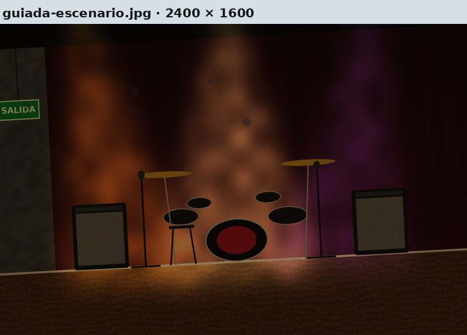
en el diálogo Capas hay dos capas y la activa (resaltada) es retoque.
2Enderezar con Medir
- Herramienta Medir (Mayús+M).
- Haz clic en el extremo izquierdo del canto blanco del escenario (la línea donde acaba la tarima) y arrastra hasta el extremo derecho. En la barra de estado, abajo, sale el ángulo: unos 3°.
- En las opciones de la herramienta, pulsa Enderezar. La foto gira y quedan esquinas vacías (el cuadriculado gris es transparencia).

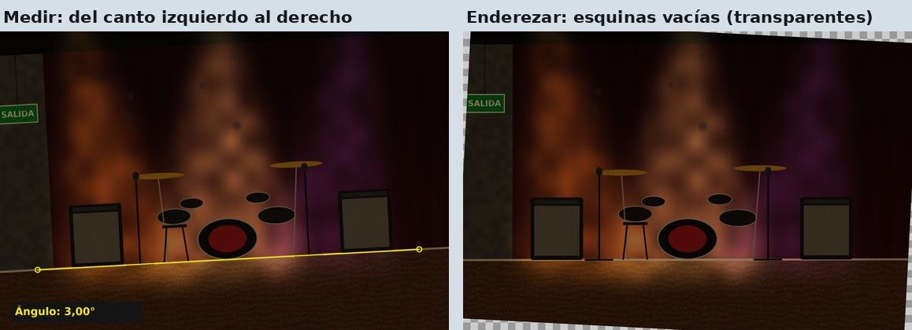
el canto del escenario y los amplificadores están rectos. Si ha girado al revés, deshaz (Ctrl+Z) y mide de izquierda a derecha.
3Recortar a 3:2
- Herramienta Recortar (Mayús+C). En sus opciones: marca Fijo y elige Relación de aspecto con 3:2; en Guías, Regla de los tercios; deja marcado Borrar los píxeles recortados.
- Dibuja el rectángulo lo más grande que puedas sin que entre ninguna esquina transparente. Pulsa Intro.

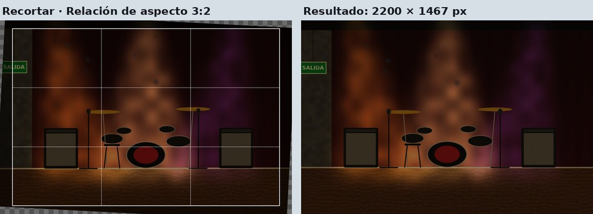
la barra de título de GIMP dice unos 2200 × 1467 px (vale entre 2150 y 2250 de ancho) y no queda ningún trozo transparente.
4La luz: Niveles
- Mira el histograma: está todo amontonado a la izquierda y la mitad derecha, vacía. La foto está oscura.
Colores > Niveles, canal Valor. En los niveles de entrada escribe 5 (negro), 1,50 (gris) y 145 (blanco). También puedes arrastrar los triángulos negro y blanco hasta donde empieza y acaba el histograma.- Aceptar.

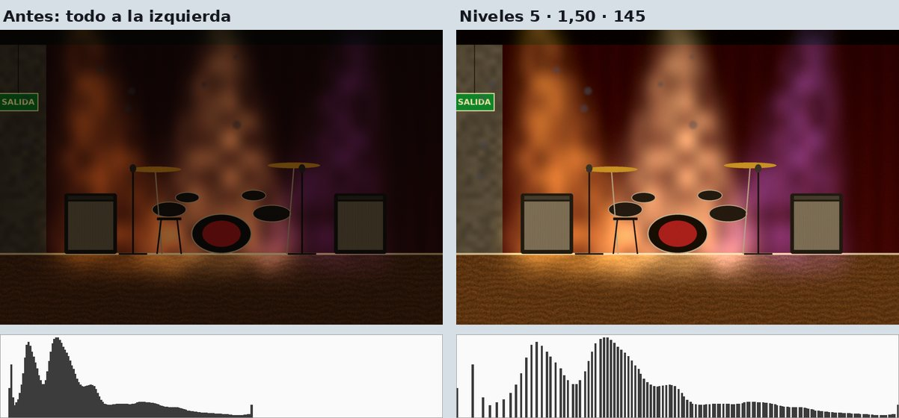
el histograma va ahora de un extremo a otro. La foto sigue naranja: eso se arregla en el paso siguiente.
5El color: quitar la dominante naranja
- Vuelve a
Colores > Niveles. - Coge el cuentagotas gris (el del centro, Elegir el punto gris) y haz clic en la rejilla de uno de los amplificadores: en la realidad es gris neutro.
- Si queda raro, prueba en otro punto de la rejilla. Aceptar.
Otra forma: Colores > Automático > Balance de blancos.
Es más rápida, pero a veces exagera: compara las dos.

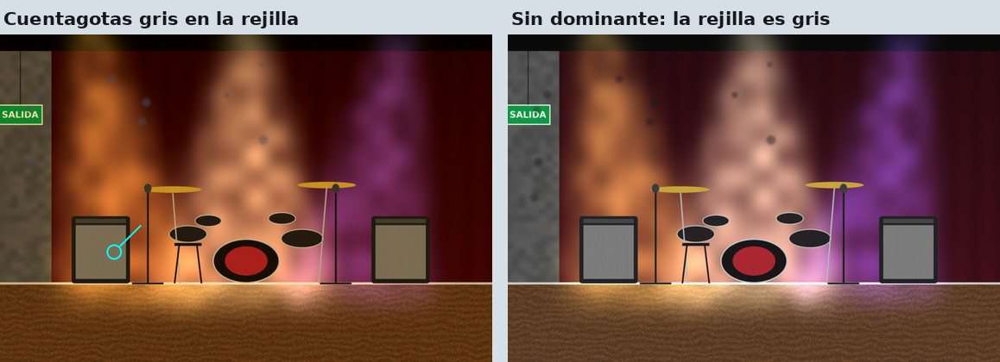
la rejilla de los amplificadores y la pared de la izquierda son grises, sin tono naranja; las luces de colores de los focos siguen ahí.
6Limpiar: Clonar y Saneado
- Pulsa 1 para ver la imagen al 100 % y ve a la esquina de arriba a la izquierda.
- Herramienta Clonar (C), pincel un poco más grande que el letrero (cambia el tamaño con [ y ]). Ctrl+clic en la pared gris justo debajo del letrero y pinta encima del letrero y del cable que lo cuelga. Cambia el origen varias veces para que no se vean trozos repetidos.
- Herramienta Saneado (H), pincel de unos 50 px. Hay 10 motas oscuras: en la pared gris y en los dos conos de luz de la izquierda y del centro. Para cada una: Ctrl+clic al lado, en una zona con la misma luz, y un clic encima.

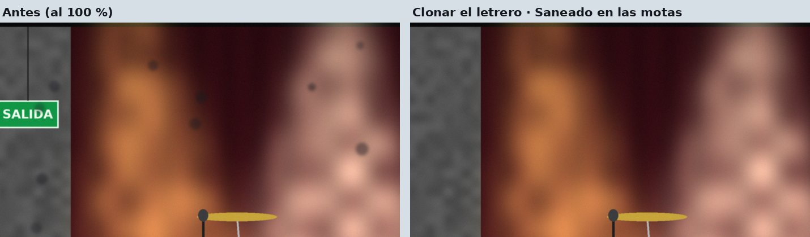
al 100 % no se ve el letrero ni su cable ni ninguna mota, ni manchas repetidas donde estaban.
7Enfocar, guardar y exportar la foto
Filtros > Realzar > Enfocar (máscara de desenfoque): radio 1,5, cantidad 0,5. Poco: si aparece un halo claro en los bordes, te has pasado.- Ctrl+S para guardar el
.xcf. Archivo > Exportar como→guiada-foto.jpg, calidad 85, y desmarca Guardar datos Exif y XMP.

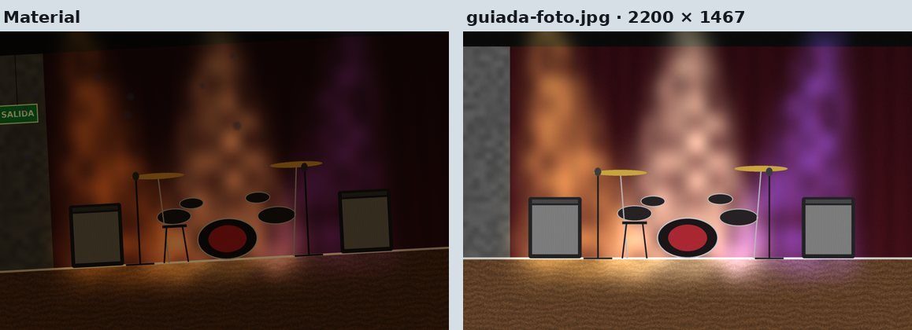
tienes guiada-foto.xcf (dos capas) y guiada-foto.jpg (unos 2200 × 1467 px, menos de 1 MB).
Parte B · Montar el cartel A5
El cartel es un A5 para la imprenta: 148 × 210 mm más 3 mm de sangrado por cada lado, a 300 ppp (subtema 3.6).
8Imagen nueva con sangrado y guías
- Haz clic en el color de frente (el cuadrado de arriba, en la caja de herramientas) y escribe en Notación HTML 1e1a24 (un morado casi negro).
Archivo > Nueva…: anchura 1819, altura 2551 píxeles. Abre Opciones avanzadas: resolución X e Y 300; Rellenar con: Color de frente.Archivo > Guardar como→guiada-cartel.xcf. Llama a la capa fondo.Imagen > Guías > Guía nueva…, una vez por guía:- Verticales en 35, 94, 1725 y 1784.
- Horizontales en 35, 94, 2457 y 2516.
- Activa
Vista > Ajustar a las guías.

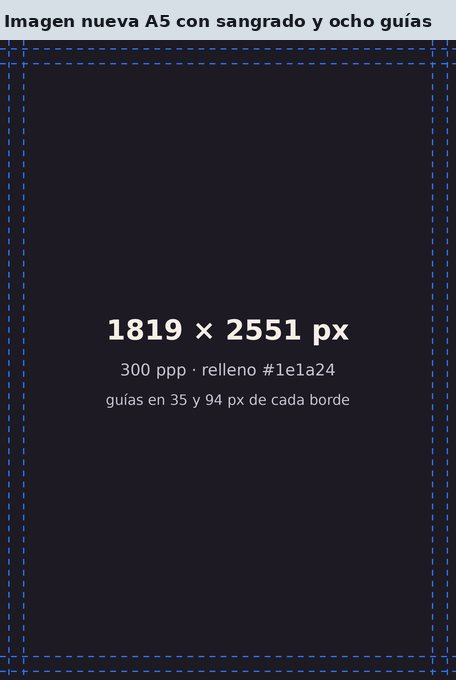
Imagen > Tamaño de impresión dice 154 × 216 mm y 300 ppp, y hay dos guías cerca de cada borde.
9La foto como capa, fundida con el fondo
Archivo > Abrir como capas(Ctrl+Alt+O) →guiada-foto.jpg. Llama a la capa foto.Capa > Escalar capa: con la cadena cerrada, anchura 1819. La altura se pone sola (unos 1213 px).- Súbela arriba del todo: doble clic en la miniatura de la capa para abrir sus atributos y pon Desplazamiento X 0 e Y 0. (También vale arrastrarla con Mover, M, hasta que se pegue a las esquinas de arriba.)
Capa > Máscara > Añadir máscara de capa→ Blanco (opacidad total).- Herramienta Degradado (G). Pulsa D (negro y blanco) y luego X (blanco al frente). Con la máscara activa (borde blanco en su miniatura), arrastra en vertical (con Ctrl) desde y ≈ 750 hasta el borde de abajo de la foto (y ≈ 1213). Mira la posición del puntero abajo a la izquierda. Pulsa Intro.

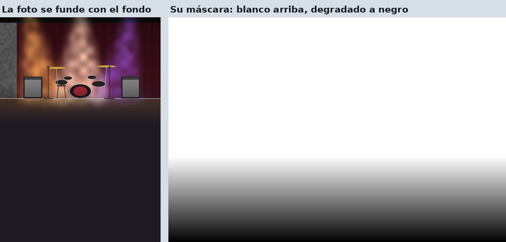
la foto no acaba en una línea recta: se va oscureciendo hasta desaparecer en el fondo. Si ha quedado al revés (fundida arriba), repite el degradado de abajo arriba o pulsa X.
10Recortar la guitarra y traerla al cartel
Archivo > Abrir→guiada-guitarra.jpg(se abre en otra pestaña).- Selección difusa (U), umbral 30. Clic en la pared. Con Mayús+clic añade las zonas de pared y sombra que se hayan quedado fuera, hasta que las hormigas rodeen solo la guitarra.
Seleccionar > Invertir(Ctrl+I): ahora está seleccionada la guitarra.Seleccionar > Encoger1 px ySeleccionar > Difuminar2 px: así no se lleva un borde de pared.- Ctrl+C. Vuelve a la pestaña del cartel y
Editar > Pegar como > Capa nueva. Llámala guitarra. Capa > Escalar capa: altura 1000 px, cadena cerrada.- Con Mover (M, con Mover la capa activa marcado) llévala a la derecha, apoyada en el escenario, dentro de las guías de la zona segura.
Filtros > Luz y sombra > Sombra arrojada: X 14, Y 18, radio de desenfoque 16, opacidad 0,6.

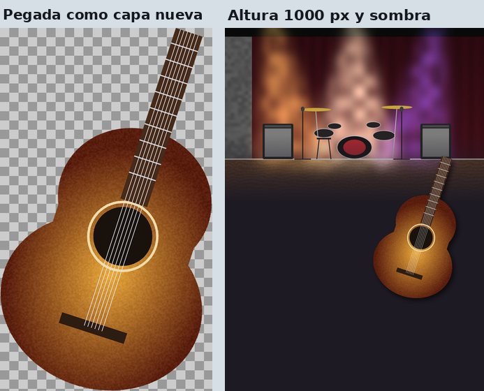
alrededor de la guitarra no queda ni un filo de la pared clara (mira con 1, al 100 %). Si queda, deshaz hasta la selección y encoge 1 px más.
11La textura en modo Multiplicar
Archivo > Abrir como capas→guiada-textura.jpg. Llámala textura.Capa > Escalar capa: altura 2551, cadena cerrada (la anchura se queda en 3401). En sus atributos, Desplazamiento X −791, Y 0, para que quede centrada.- Arriba del diálogo Capas: modo Multiplicar y opacidad 60.
- Debe estar encima de guitarra y foto, y debajo de los textos que pondrás ahora.

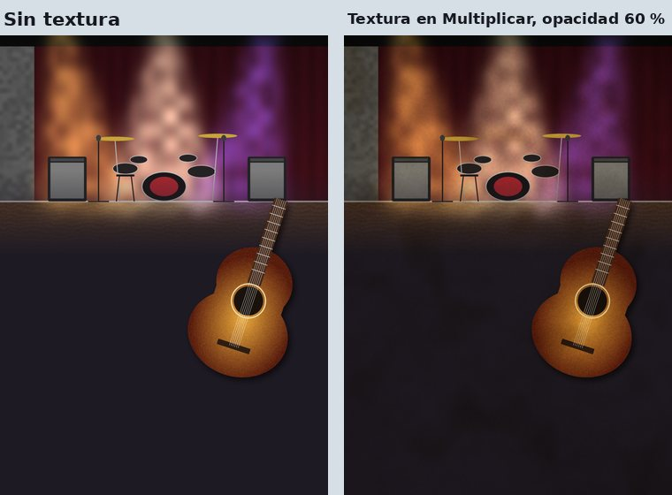
el cartel parece impreso en papel viejo y los bordes están algo más oscuros. Si se ve la textura amarilla tapándolo todo, el modo sigue en Normal.
12Textos, franja y logotipo
- Para centrar:
Imagen > Guías > Guía nueva (en porcentaje), vertical, al 50 %. - Título. Herramienta Texto (T): tipografía Sans-serif Bold, tamaño 170 px, color f6efe6, justificación centrada. Escribe LOS PICOTAS, Intro, ELÉCTRICAS. Colócalo centrado sobre la guía del 50 %, hacia la mitad del cartel (su parte de arriba en y ≈ 1290). Sombra arrojada: X 8, Y 8, radio 6, opacidad 0,8.
- Concierto acústico: Sans-serif (sin Bold), 84 px, color f28c9e, centrado debajo del título.
- Franja:
Capa > Capa nuevallamada franja, relleno Transparencia. Selección rectangular (R): en sus opciones escribe posición 0, 2110 y tamaño 1819 × 220. Pon el color de frente en negro yEditar > Rellenar con el color de frente.Seleccionar > Ningunoy opacidad de la capa 50. - Datos encima de la franja, centrados: Sábado 12 de diciembre · 21:00 (Sans-serif Bold, 54 px, crema) y debajo Plaza Mayor de Cabezuela del Valle · Entrada libre (Sans-serif, 44 px).
- Logotipo:
Archivo > Abrir como capas→guiada-logo.png;Capa > Escalar capaa 280 × 280; Desplazamiento X 1405, Y 230 (arriba a la derecha, dentro de la zona segura).

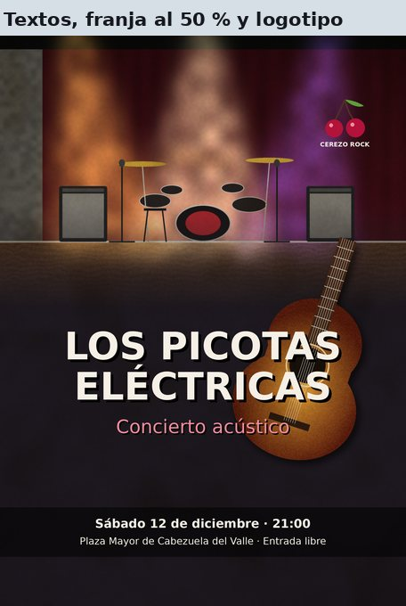
todos los textos y el logotipo están entre las guías de 94 px, y el título se lee bien encima de la guitarra gracias a la sombra.
13Ordenar y nombrar las capas
El diálogo Capas tiene que quedar así, de arriba abajo, con un nombre claro en cada una:
En GIMP 3, la sombra arrojada aparece como un filtro dentro de la capa (un icono a su derecha): se puede cambiar después con doble clic.
guarda (Ctrl+S). Si cierras y abres guiada-cartel.xcf, siguen las capas, los textos se pueden editar y las guías están en su sitio.
Parte C · Exportar y publicar
14Metadatos y PDF para la imprenta
Imagen > Metadatos > Editar metadatos: rellena el autor con tu nombre y el aviso de copyright con © 2026 Tu nombre. Escribir metadatos.Archivo > Exportar como→guiada-cartel.pdf. En las opciones deja Capas como páginas desmarcado. Exportar.- Abre el PDF con el navegador: en Propiedades del documento, el tamaño de página es 154 × 216 mm.

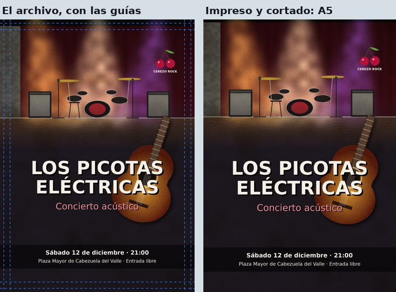
el fondo y la foto llegan hasta el borde del archivo y, en la versión cortada, no se pierde ningún texto.
15Versión para redes: 1080 × 1350
Imagen > Duplicar(Ctrl+D): trabaja en la copia, que se abre en otra pestaña.Imagen > Aplanar imagen.- Recortar (Mayús+C): dibuja un rectángulo cualquiera y, en las opciones, escribe posición 35, 182 y tamaño 1749 × 2186 (es la proporción 4:5, sin el sangrado). Intro.
Imagen > Escalar la imagen: 1080 × 1350, cadena cerrada.Archivo > Exportar como→guiada-redes.jpg, calidad 85. Cierra la copia sin guardar.

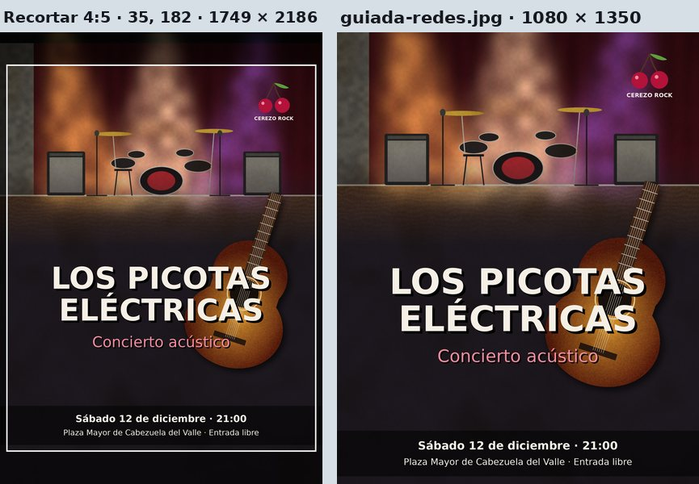
mide exactamente 1080 × 1350, pesa menos de 500 KB y se ven el logotipo, el título y la franja con los datos. Cárgala en la calculadora del laboratorio con el destino «Publicación vertical 4:5».
Entrega
Qué entregas de la práctica guiada
La foto retocada, el cartel y su versión para redes, con los archivos de trabajo y una memoria corta.
Sube a Moodle <usuario>_p37.zip. En su raíz:
| En tu carpeta | Nombre dentro del ZIP | Parte |
|---|---|---|
| La memoria | <usuario>_p37.pdf | Todas |
guiada-foto.xcf | <usuario>_a01.xcf | A |
guiada-foto.jpg | <usuario>_a01.jpg | A |
guiada-cartel.xcf | <usuario>_a02.xcf | B |
guiada-cartel.pdf | <usuario>_a03.pdf | C |
guiada-redes.jpg | <usuario>_a03.jpg | C |
Cambia el nombre solo a las copias que metes en el ZIP. La memoria cumple las normas del módulo: portada, índice con hiperenlaces, páginas numeradas, Figura N: … en cada imagen y capturas de pantalla completa con la fecha y el archivo abierto.
Capturas que no pueden faltar en la memoria
- Paso 2: la barra de estado con el ángulo medido.
- Paso 4: el cuadro Niveles con tus valores y el histograma.
- Paso 6: un detalle al 100 % antes y después de limpiar.
- Paso 13: el diálogo Capas completo del cartel, con los nombres y el modo de la textura.
- Paso 14: el PDF abierto en el navegador con las propiedades del documento (154 × 216 mm).
Comprueba antes de entregar
- La foto está recta, sin esquinas transparentes, con el histograma de un extremo a otro, la rejilla gris y sin letrero ni motas.
- El XCF del cartel mide 1819 × 2551 px a 300 ppp y tiene las capas con nombre (no «Capa copia #2»).
- Ningún texto ni el logotipo pasan las guías de 94 px.
- El PDF mide 154 × 216 mm y la versión para redes, 1080 × 1350 px.
Cómo debe quedar
Fallo más común: pintar el degradado sobre la foto en vez de sobre su máscara. Si la foto se vuelve blanca y negra, deshaz y haz clic en la miniatura de la máscara antes de repetir.